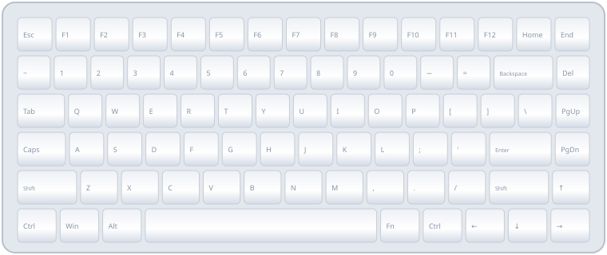

尚未连接设备
连接一次，即可使用设备信息、灯光和动画管理。
更新固件
给 Rainy75 V2 的键盘彩屏换主题，或更新 2.4G 接收器。
选择要更新的部件
选择要安装的内容
选择适用于 Rainy75 V2 彩屏的 .bin 文件。文件只在本机读取。
文件适用范围
网页会检查文件格式，固件来源和设备兼容性请与提供方确认。
查看错误详情
连接设备并更新
本次要安装的内容
固件详情
- 目标设备
- 固件来源
- 文件名
- 固件版本
- 文件大小
- 写入大小
- 文件指纹（SHA-256）
用 USB 数据线把键盘连到电脑，并切到有线模式。
请先关闭官方驱动。更新期间请保持设备连接，别关闭此页面。
更新进度
点击下方按钮，在浏览器弹窗中选择升级模式下的设备。
查看错误详情
查看更新步骤
- 检查文件
- 准备设备
- 擦除旧固件
- 写入固件
- 核对写入结果
- 结束更新
烧录日志
暂无烧录记录
屏幕动画管理
用 USB 数据线连接键盘，再点顶部的「连接设备」。
切换壁纸时会跳过空槽位。官方云朵页由键盘内置。
通信记录
暂无通信记录
Rainy75 V2
未连接设备
- 电池电量
- —
- 充电状态
- 未读取
- 键盘灯光
- 未读取
连接后会自动读取设备状态。

设备详情
- 设备名称
- 未连接
- 设备标识
- —
使用 2.4G 接收器时，如果读不到数据，可以先按一下键盘唤醒设备。
续航按 10000 mAh、1 kHz、灯光关闭和平均电流 20–50 mA 估算。彩屏、休眠和电池损耗等因素尚未实测。
通信日志
暂无通信记录
RainyMurphy
v1.03开源网页工具
Made by JimmyRespawn
显示设置
项目与兼容性
- 适用设备
- Rainy75 V2IPS 彩屏
- 运行方式
- Chrome / EdgeHTTPS、localhost 或离线包
- 固件分发
- 按需选择固件网页版默认不附带 BIN
- 源码许可
- MIT固件保留各自许可
固件使用说明
连接设备、控制灯光和管理动画可直接使用。更新彩屏或接收器时，请在「固件烧录」选择对应的 BIN。
本地文件仅在当前页面处理，刷新后清空选择。